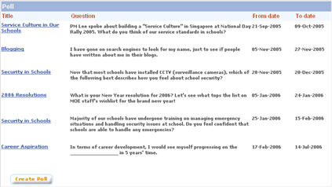
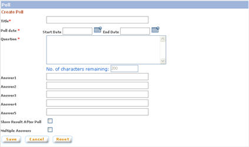
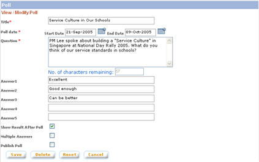
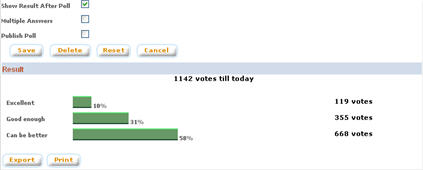

|
Poll
Polls can be used to gather quick feedback from users on a certain topic. Polls will be displayed on the My Forum main page for easy access.
a. Click on "Poll" button from the left panel of the admin main page
b. The "Poll Maintenance" shows the list of created polls sorted on the active date.

1. Create Poll
a. Click on the "Create Poll" button
b. In the "Create Poll" page, enter the poll details including the poll question and answers. Click on "Save" button to create the poll. NOTE: System does not allow poll period to overlap with another poll or setting the starting date to a past date.

2. Modify Poll
a. Click on the poll name
b. In the "View / Modify Poll" page, make necessary modifications. Click on "Save" button to save modifications made. NOTE: System does not allow poll period to overlap with another poll, the start date to be set to a past date, or change the starting date of a past poll.

3. Delete Poll
a. Click on the Poll name
b. Click on "Delete" button to delete the poll.
4. Publish Poll Result
Publishing poll result is available to publish past poll result. Users will be able to access the published poll result directly from the My Forum main page.
a. Click on the Poll name
b. Check the "Publish Poll" checkbox. NOTE: System does not allow publishing poll result if there's another poll currently being published
5. Export Poll Result
Result of past poll can be exported for publishing or archiving.
a. Click on the name of the poll
b. Click on the "Export" button on the bottom part of the screen. System will open the exported result in Microsoft Excel

6. Print Poll Result
Besides exporting past poll result, directly print the poll result is also possible
a. Click on the name of the poll
b.? Click on the "Print" button on the bottom part of the screen. System will open the poll result in a pop up window in printer-friendly interface.
|